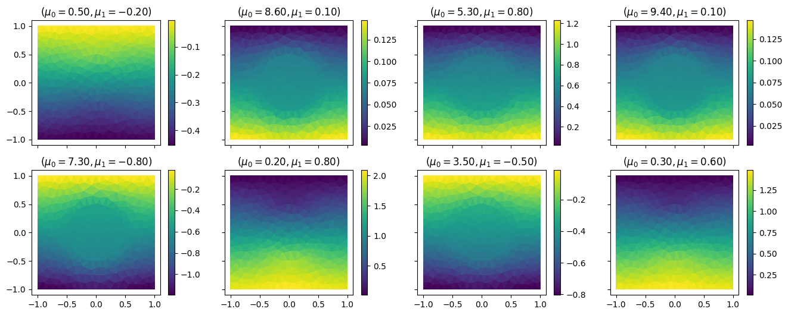
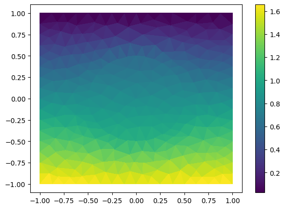

<!DOCTYPE html>
<html class="writer-html5" lang="en" data-content_root="../../">
<head>
  <meta charset="utf-8" /><meta name="viewport" content="width=device-width, initial-scale=1" />

  <meta name="viewport" content="width=device-width, initial-scale=1.0" />
  <title>Build and query a simple reduced order model &mdash; ezyrb 1.3.3 documentation</title>
      <link rel="stylesheet" type="text/css" href="../../_static/pygments.css?v=fa44fd50" />
      <link rel="stylesheet" type="text/css" href="../../_static/css/theme.css?v=e59714d7" />
      <link rel="stylesheet" type="text/css" href="../../_static/graphviz.css?v=4ae1632d" />

  
      <script src="../../_static/jquery.js?v=5d32c60e"></script>
      <script src="../../_static/_sphinx_javascript_frameworks_compat.js?v=2cd50e6c"></script>
      <script src="../../_static/documentation_options.js?v=28d163b9"></script>
      <script src="../../_static/doctools.js?v=9bcbadda"></script>
      <script src="../../_static/sphinx_highlight.js?v=dc90522c"></script>
      <script async="async" src="https://cdn.jsdelivr.net/npm/mathjax@3/es5/tex-mml-chtml.js"></script>
    <script src="../../_static/js/theme.js"></script>
    <link rel="index" title="Index" href="../../genindex.html" />
    <link rel="search" title="Search" href="../../search.html" />
    <link rel="next" title="Test several frameworks at once" href="../tutorial-2/tutorial-2.html" />
    <link rel="prev" title="Tutorials" href="../../tutorials.html" /> 
</head>

<body class="wy-body-for-nav"> 
  <div class="wy-grid-for-nav">
    <nav data-toggle="wy-nav-shift" class="wy-nav-side">
      <div class="wy-side-scroll">
        <div class="wy-side-nav-search" >

          
          
          <a href="../../index.html" class="icon icon-home">
            ezyrb
          </a>
<div role="search">
  <form id="rtd-search-form" class="wy-form" action="../../search.html" method="get">
    <input type="text" name="q" placeholder="Search docs" aria-label="Search docs" />
    <input type="hidden" name="check_keywords" value="yes" />
    <input type="hidden" name="area" value="default" />
  </form>
</div>
        </div><div class="wy-menu wy-menu-vertical" data-spy="affix" role="navigation" aria-label="Navigation menu">
              <p class="caption" role="heading"><span class="caption-text">User Guide</span></p>
<ul class="current">
<li class="toctree-l1"><a class="reference internal" href="../../installation.html">Installation</a></li>
<li class="toctree-l1"><a class="reference internal" href="../../quickstart.html">Quick Start</a></li>
<li class="toctree-l1"><a class="reference internal" href="../../code.html">API Documentation</a></li>
<li class="toctree-l1 current"><a class="reference internal" href="../../tutorials.html">Tutorials</a><ul class="current">
<li class="toctree-l2 current"><a class="current reference internal" href="#">Build and query a simple reduced order model</a><ul>
<li class="toctree-l3"><a class="reference internal" href="#initial-setting">Initial setting</a><ul>
<li class="toctree-l4"><a class="reference internal" href="#offline-phase">Offline phase</a></li>
<li class="toctree-l4"><a class="reference internal" href="#online-phase">Online phase</a></li>
<li class="toctree-l4"><a class="reference internal" href="#error-approximation-improvement">Error Approximation &amp; Improvement</a></li>
</ul>
</li>
</ul>
</li>
<li class="toctree-l2"><a class="reference internal" href="../tutorial-2/tutorial-2.html">Test several frameworks at once</a></li>
<li class="toctree-l2"><a class="reference internal" href="../tutorial-3/tutorial-3.html">Using Plugin for implementing NNsPOD-ROM</a></li>
<li class="toctree-l2"><a class="reference internal" href="../tutorial-4/tutorial-4.html">Build a Multi Reduced Order Model (MultiROM)</a></li>
</ul>
</li>
</ul>
<p class="caption" role="heading"><span class="caption-text">Developer Info</span></p>
<ul>
<li class="toctree-l1"><a class="reference internal" href="../../contributing.html">How to contribute</a></li>
<li class="toctree-l1"><a class="reference internal" href="../../contact.html">Contact</a></li>
<li class="toctree-l1"><a class="reference internal" href="../../LICENSE.html">License</a></li>
</ul>

        </div>
      </div>
    </nav>

    <section data-toggle="wy-nav-shift" class="wy-nav-content-wrap"><nav class="wy-nav-top" aria-label="Mobile navigation menu" >
          <i data-toggle="wy-nav-top" class="fa fa-bars"></i>
          <a href="../../index.html">ezyrb</a>
      </nav>

      <div class="wy-nav-content">
        <div class="rst-content">
          <div role="navigation" aria-label="Page navigation">
  <ul class="wy-breadcrumbs">
      <li><a href="../../index.html" class="icon icon-home" aria-label="Home"></a></li>
          <li class="breadcrumb-item"><a href="../../tutorials.html">Tutorials</a></li>
      <li class="breadcrumb-item active">Build and query a simple reduced order model</li>
      <li class="wy-breadcrumbs-aside">
            <a href="../../_sources/_tutorials/tutorial-1/tutorial-1.rst.txt" rel="nofollow"> View page source</a>
      </li>
  </ul>
  <hr/>
</div>
          <div role="main" class="document" itemscope="itemscope" itemtype="http://schema.org/Article">
           <div itemprop="articleBody">
             
  <section id="build-and-query-a-simple-reduced-order-model">
<h1>Build and query a simple reduced order model<a class="headerlink" href="#build-and-query-a-simple-reduced-order-model" title="Link to this heading"></a></h1>
<p>In this tutorial we will show the typical workflow for the construcion
of the Reduced Order Model based only on the outputs of the higher-order
model. In detail, we consider here a POD-RBF framework (Proper
Orthogonal Decomposition for dimensionality reduction and Radial Basis
Function for manifold approximation), but the tutorial can be easily
extended to other methods thanks to the modularity nature of <strong>EZyRB</strong>.</p>
<p>We consider a parametric steady heat conduction problem in a
two-dimensional domain <span class="math notranslate nohighlight">\(\Omega\)</span>. While in this tutorial we are
going to focus on the data-driven approach, the same problem can be
tackled in an intrusive manner (with the Reduced Basis method) using the
<a class="reference external" href="https://gitlab.com/RBniCS/RBniCS">RBniCS</a>, as demonstrated in this
<a class="reference external" href="https://gitlab.com/RBniCS/RBniCS/tree/master/tutorials/01_thermal_block">RBniCS
tutorial</a>.
This book is therefore exhaustively discussed in the book <em>Certified
reduced basis methods for parametrized partial differential equations</em>,
J.S. Hesthaven, G. Rozza, B. Stamm, 2016, Springer. An additional
description is available also at
<a href="#id1"><span class="problematic" id="id2">`https://rbnics.gitlab.io/RBniCS-jupyter/tutorial_thermal_block.html &lt;&gt;`__</span></a>.</p>
<p>Since the good documentation already available for this problem and
since the data-driven methodologies we will take into consideration, we
just summarize the model to allow a better understanding.</p>
<p>The domain is depicted below:</p>
<p>where: - the first parameter <span class="math notranslate nohighlight">\(\mu_o\)</span> controls the conductivity in
the circular subdomain <span class="math notranslate nohighlight">\(\Omega_0\)</span>; - the second parameter
<span class="math notranslate nohighlight">\(\mu_1\)</span> controls the flux over <span class="math notranslate nohighlight">\(\Gamma_\text{base}\)</span>.</p>
<section id="initial-setting">
<h2>Initial setting<a class="headerlink" href="#initial-setting" title="Link to this heading"></a></h2>
<p>First of all import the required packages: we need the standard Numpy
and Matplotlib, and some classes from EZyRB. In the EZyRB framework, we
need three main ingredients to construct a reduced order model: - an
initial database where the snapshots are stored; - a reduction method to
reduce the dimensionality of the system, in this tutorial we will use
the proper orthogonal decomposition (POD) method; - an approximation
method to extrapolate the parametric solution for new parameters, in
this tutorial we will use a radial basis function (RBF) interpolation.</p>
<div class="highlight-ipython3 notranslate"><div class="highlight"><pre><span></span>!pip install ezyrb datasets
</pre></div>
</div>
<div class="highlight-default notranslate"><div class="highlight"><pre><span></span>Requirement already satisfied: ezyrb in /Users/ndemo/miniconda3/envs/pina/lib/python3.12/site-packages (1.3.2)
Requirement already satisfied: datasets in /Users/ndemo/miniconda3/envs/pina/lib/python3.12/site-packages (4.4.2)
Requirement already satisfied: future in /Users/ndemo/miniconda3/envs/pina/lib/python3.12/site-packages (from ezyrb) (1.0.0)
Requirement already satisfied: numpy in /Users/ndemo/miniconda3/envs/pina/lib/python3.12/site-packages (from ezyrb) (2.2.0)
Requirement already satisfied: scipy in /Users/ndemo/miniconda3/envs/pina/lib/python3.12/site-packages (from ezyrb) (1.14.1)
Requirement already satisfied: matplotlib in /Users/ndemo/miniconda3/envs/pina/lib/python3.12/site-packages (from ezyrb) (3.10.0)
Requirement already satisfied: scikit-learn in /Users/ndemo/miniconda3/envs/pina/lib/python3.12/site-packages (from ezyrb) (1.8.0)
Requirement already satisfied: torch in /Users/ndemo/miniconda3/envs/pina/lib/python3.12/site-packages (from ezyrb) (2.5.1)
Requirement already satisfied: filelock in /Users/ndemo/miniconda3/envs/pina/lib/python3.12/site-packages (from datasets) (3.16.1)
Requirement already satisfied: pyarrow&gt;=21.0.0 in /Users/ndemo/miniconda3/envs/pina/lib/python3.12/site-packages (from datasets) (22.0.0)
Requirement already satisfied: dill&lt;0.4.1,&gt;=0.3.0 in /Users/ndemo/miniconda3/envs/pina/lib/python3.12/site-packages (from datasets) (0.4.0)
Requirement already satisfied: pandas in /Users/ndemo/miniconda3/envs/pina/lib/python3.12/site-packages (from datasets) (2.2.3)
Requirement already satisfied: requests&gt;=2.32.2 in /Users/ndemo/miniconda3/envs/pina/lib/python3.12/site-packages (from datasets) (2.32.3)
Requirement already satisfied: httpx&lt;1.0.0 in /Users/ndemo/miniconda3/envs/pina/lib/python3.12/site-packages (from datasets) (0.28.1)
Requirement already satisfied: tqdm&gt;=4.66.3 in /Users/ndemo/miniconda3/envs/pina/lib/python3.12/site-packages (from datasets) (4.67.1)
Requirement already satisfied: xxhash in /Users/ndemo/miniconda3/envs/pina/lib/python3.12/site-packages (from datasets) (3.6.0)
Requirement already satisfied: multiprocess&lt;0.70.19 in /Users/ndemo/miniconda3/envs/pina/lib/python3.12/site-packages (from datasets) (0.70.18)
Requirement already satisfied: fsspec&lt;=2025.10.0,&gt;=2023.1.0 in /Users/ndemo/miniconda3/envs/pina/lib/python3.12/site-packages (from fsspec[http]&lt;=2025.10.0,&gt;=2023.1.0-&gt;datasets) (2025.10.0)
Requirement already satisfied: huggingface-hub&lt;2.0,&gt;=0.25.0 in /Users/ndemo/miniconda3/envs/pina/lib/python3.12/site-packages (from datasets) (1.2.3)
Requirement already satisfied: packaging in /Users/ndemo/miniconda3/envs/pina/lib/python3.12/site-packages (from datasets) (24.2)
Requirement already satisfied: pyyaml&gt;=5.1 in /Users/ndemo/miniconda3/envs/pina/lib/python3.12/site-packages (from datasets) (6.0.2)
Requirement already satisfied: aiohttp!=4.0.0a0,!=4.0.0a1 in /Users/ndemo/miniconda3/envs/pina/lib/python3.12/site-packages (from fsspec[http]&lt;=2025.10.0,&gt;=2023.1.0-&gt;datasets) (3.11.10)
Requirement already satisfied: anyio in /Users/ndemo/miniconda3/envs/pina/lib/python3.12/site-packages (from httpx&lt;1.0.0-&gt;datasets) (4.8.0)
Requirement already satisfied: certifi in /Users/ndemo/miniconda3/envs/pina/lib/python3.12/site-packages (from httpx&lt;1.0.0-&gt;datasets) (2024.12.14)
Requirement already satisfied: httpcore==1.* in /Users/ndemo/miniconda3/envs/pina/lib/python3.12/site-packages (from httpx&lt;1.0.0-&gt;datasets) (1.0.7)
Requirement already satisfied: idna in /Users/ndemo/miniconda3/envs/pina/lib/python3.12/site-packages (from httpx&lt;1.0.0-&gt;datasets) (3.10)
Requirement already satisfied: h11&lt;0.15,&gt;=0.13 in /Users/ndemo/miniconda3/envs/pina/lib/python3.12/site-packages (from httpcore==1.*-&gt;httpx&lt;1.0.0-&gt;datasets) (0.14.0)
Requirement already satisfied: hf-xet&lt;2.0.0,&gt;=1.2.0 in /Users/ndemo/miniconda3/envs/pina/lib/python3.12/site-packages (from huggingface-hub&lt;2.0,&gt;=0.25.0-&gt;datasets) (1.2.0)
Requirement already satisfied: shellingham in /Users/ndemo/miniconda3/envs/pina/lib/python3.12/site-packages (from huggingface-hub&lt;2.0,&gt;=0.25.0-&gt;datasets) (1.5.4)
Requirement already satisfied: typer-slim in /Users/ndemo/miniconda3/envs/pina/lib/python3.12/site-packages (from huggingface-hub&lt;2.0,&gt;=0.25.0-&gt;datasets) (0.20.1)
Requirement already satisfied: typing-extensions&gt;=3.7.4.3 in /Users/ndemo/miniconda3/envs/pina/lib/python3.12/site-packages (from huggingface-hub&lt;2.0,&gt;=0.25.0-&gt;datasets) (4.12.2)
Requirement already satisfied: charset-normalizer&lt;4,&gt;=2 in /Users/ndemo/miniconda3/envs/pina/lib/python3.12/site-packages (from requests&gt;=2.32.2-&gt;datasets) (3.4.0)
Requirement already satisfied: urllib3&lt;3,&gt;=1.21.1 in /Users/ndemo/miniconda3/envs/pina/lib/python3.12/site-packages (from requests&gt;=2.32.2-&gt;datasets) (2.2.3)
Requirement already satisfied: contourpy&gt;=1.0.1 in /Users/ndemo/miniconda3/envs/pina/lib/python3.12/site-packages (from matplotlib-&gt;ezyrb) (1.3.1)
Requirement already satisfied: cycler&gt;=0.10 in /Users/ndemo/miniconda3/envs/pina/lib/python3.12/site-packages (from matplotlib-&gt;ezyrb) (0.12.1)
Requirement already satisfied: fonttools&gt;=4.22.0 in /Users/ndemo/miniconda3/envs/pina/lib/python3.12/site-packages (from matplotlib-&gt;ezyrb) (4.55.3)
Requirement already satisfied: kiwisolver&gt;=1.3.1 in /Users/ndemo/miniconda3/envs/pina/lib/python3.12/site-packages (from matplotlib-&gt;ezyrb) (1.4.7)
Requirement already satisfied: pillow&gt;=8 in /Users/ndemo/miniconda3/envs/pina/lib/python3.12/site-packages (from matplotlib-&gt;ezyrb) (11.0.0)
Requirement already satisfied: pyparsing&gt;=2.3.1 in /Users/ndemo/miniconda3/envs/pina/lib/python3.12/site-packages (from matplotlib-&gt;ezyrb) (3.2.0)
Requirement already satisfied: python-dateutil&gt;=2.7 in /Users/ndemo/miniconda3/envs/pina/lib/python3.12/site-packages (from matplotlib-&gt;ezyrb) (2.9.0.post0)
Requirement already satisfied: pytz&gt;=2020.1 in /Users/ndemo/miniconda3/envs/pina/lib/python3.12/site-packages (from pandas-&gt;datasets) (2025.1)
Requirement already satisfied: tzdata&gt;=2022.7 in /Users/ndemo/miniconda3/envs/pina/lib/python3.12/site-packages (from pandas-&gt;datasets) (2025.1)
Requirement already satisfied: joblib&gt;=1.3.0 in /Users/ndemo/miniconda3/envs/pina/lib/python3.12/site-packages (from scikit-learn-&gt;ezyrb) (1.5.3)
Requirement already satisfied: threadpoolctl&gt;=3.2.0 in /Users/ndemo/miniconda3/envs/pina/lib/python3.12/site-packages (from scikit-learn-&gt;ezyrb) (3.6.0)
Requirement already satisfied: networkx in /Users/ndemo/miniconda3/envs/pina/lib/python3.12/site-packages (from torch-&gt;ezyrb) (3.4.2)
Requirement already satisfied: jinja2 in /Users/ndemo/miniconda3/envs/pina/lib/python3.12/site-packages (from torch-&gt;ezyrb) (3.1.4)
Requirement already satisfied: setuptools in /Users/ndemo/miniconda3/envs/pina/lib/python3.12/site-packages (from torch-&gt;ezyrb) (75.6.0)
Requirement already satisfied: sympy==1.13.1 in /Users/ndemo/miniconda3/envs/pina/lib/python3.12/site-packages (from torch-&gt;ezyrb) (1.13.1)
Requirement already satisfied: mpmath&lt;1.4,&gt;=1.1.0 in /Users/ndemo/miniconda3/envs/pina/lib/python3.12/site-packages (from sympy==1.13.1-&gt;torch-&gt;ezyrb) (1.3.0)
Requirement already satisfied: aiohappyeyeballs&gt;=2.3.0 in /Users/ndemo/miniconda3/envs/pina/lib/python3.12/site-packages (from aiohttp!=4.0.0a0,!=4.0.0a1-&gt;fsspec[http]&lt;=2025.10.0,&gt;=2023.1.0-&gt;datasets) (2.4.4)
Requirement already satisfied: aiosignal&gt;=1.1.2 in /Users/ndemo/miniconda3/envs/pina/lib/python3.12/site-packages (from aiohttp!=4.0.0a0,!=4.0.0a1-&gt;fsspec[http]&lt;=2025.10.0,&gt;=2023.1.0-&gt;datasets) (1.3.2)
Requirement already satisfied: attrs&gt;=17.3.0 in /Users/ndemo/miniconda3/envs/pina/lib/python3.12/site-packages (from aiohttp!=4.0.0a0,!=4.0.0a1-&gt;fsspec[http]&lt;=2025.10.0,&gt;=2023.1.0-&gt;datasets) (24.3.0)
Requirement already satisfied: frozenlist&gt;=1.1.1 in /Users/ndemo/miniconda3/envs/pina/lib/python3.12/site-packages (from aiohttp!=4.0.0a0,!=4.0.0a1-&gt;fsspec[http]&lt;=2025.10.0,&gt;=2023.1.0-&gt;datasets) (1.5.0)
Requirement already satisfied: multidict&lt;7.0,&gt;=4.5 in /Users/ndemo/miniconda3/envs/pina/lib/python3.12/site-packages (from aiohttp!=4.0.0a0,!=4.0.0a1-&gt;fsspec[http]&lt;=2025.10.0,&gt;=2023.1.0-&gt;datasets) (6.1.0)
Requirement already satisfied: propcache&gt;=0.2.0 in /Users/ndemo/miniconda3/envs/pina/lib/python3.12/site-packages (from aiohttp!=4.0.0a0,!=4.0.0a1-&gt;fsspec[http]&lt;=2025.10.0,&gt;=2023.1.0-&gt;datasets) (0.2.1)
Requirement already satisfied: yarl&lt;2.0,&gt;=1.17.0 in /Users/ndemo/miniconda3/envs/pina/lib/python3.12/site-packages (from aiohttp!=4.0.0a0,!=4.0.0a1-&gt;fsspec[http]&lt;=2025.10.0,&gt;=2023.1.0-&gt;datasets) (1.18.3)
Requirement already satisfied: six&gt;=1.5 in /Users/ndemo/miniconda3/envs/pina/lib/python3.12/site-packages (from python-dateutil&gt;=2.7-&gt;matplotlib-&gt;ezyrb) (1.17.0)
Requirement already satisfied: sniffio&gt;=1.1 in /Users/ndemo/miniconda3/envs/pina/lib/python3.12/site-packages (from anyio-&gt;httpx&lt;1.0.0-&gt;datasets) (1.3.1)
Requirement already satisfied: MarkupSafe&gt;=2.0 in /Users/ndemo/miniconda3/envs/pina/lib/python3.12/site-packages (from jinja2-&gt;torch-&gt;ezyrb) (3.0.2)
Requirement already satisfied: click&gt;=8.0.0 in /Users/ndemo/miniconda3/envs/pina/lib/python3.12/site-packages (from typer-slim-&gt;huggingface-hub&lt;2.0,&gt;=0.25.0-&gt;datasets) (8.3.1)

[notice] A new release of pip is available: 24.3.1 -&gt; 25.3
[notice] To update, run: pip install --upgrade pip
</pre></div>
</div>
<div class="highlight-ipython3 notranslate"><div class="highlight"><pre><span></span>import numpy as np
import matplotlib.tri as mtri
import matplotlib.pyplot as plt
from ezyrb import POD, RBF, Database
from ezyrb import ReducedOrderModel as ROM
%matplotlib inline
</pre></div>
</div>
<section id="offline-phase">
<h3>Offline phase<a class="headerlink" href="#offline-phase" title="Link to this heading"></a></h3>
<p>In the <em>offline</em> phase, we need some samples of the parametric
high-fidelity model. In this case, we extract 8 snapshots from the
numerical model implemented in <strong>FEniCS</strong>, and we import them and the
related parameters.</p>
<div class="highlight-ipython3 notranslate"><div class="highlight"><pre><span></span>from datasets import load_dataset
data_path = &quot;kshitij-pandey/termal_dataset&quot;
snapshots_hf = load_dataset(data_path, &quot;snapshots&quot;, split=&quot;train&quot;)
param_hf = load_dataset(data_path, &quot;params&quot;, split=&quot;train&quot;)
triangles_hf    = load_dataset(data_path, &quot;triangles&quot;, split=&quot;train&quot;)
coords_hf = load_dataset(data_path, &quot;coords&quot;,     split=&quot;train&quot;)


# convert the dict files into numpy

import pandas as pd

def hf_to_numpy(ds):
    return ds.to_pandas().to_numpy()


snapshots = hf_to_numpy(snapshots_hf)
param = hf_to_numpy(param_hf)
triangles = hf_to_numpy(triangles_hf)
coords = hf_to_numpy(coords_hf)
print(snapshots.shape, param.shape)
</pre></div>
</div>
<div class="highlight-default notranslate"><div class="highlight"><pre><span></span><span class="p">(</span><span class="mi">8</span><span class="p">,</span> <span class="mi">304</span><span class="p">)</span> <span class="p">(</span><span class="mi">8</span><span class="p">,</span> <span class="mi">2</span><span class="p">)</span>
</pre></div>
</div>
<p>Moreover, to visualize the solution (both the higher-order one and the
reduced one), we import also the mesh information to be able to create
the triangulation. We underline this additional step is related only to
plotting purpose, and not mandatory for the reduced space generation.</p>
<div class="highlight-ipython3 notranslate"><div class="highlight"><pre><span></span>x, y  = coords
from matplotlib.tri import Triangulation
triang = Triangulation(x, y, triangles)
triang = triang
</pre></div>
</div>
<p>For the sake of clarity the snapshots are plotted.</p>
<div class="highlight-ipython3 notranslate"><div class="highlight"><pre><span></span>fig, ax = plt.subplots(nrows=2, ncols=4, figsize=(16, 6), sharey=True, sharex=True)
ax = ax.flatten()
for i in range(8):
    ax[i].triplot(triang, &#39;b-&#39;, lw=0.1)
    cm = ax[i].tripcolor(triang, snapshots[i])
    fig.colorbar(cm, ax=ax[i])
    ax[i].set_title(&#39;($\mu_0={:5.2f}, \mu_1={:5.2f})$&#39;.format(*param[i]))
</pre></div>
</div>

<p>First of all, we create a <code class="docutils literal notranslate"><span class="pre">Database</span></code> object from the parameters and
the snapshots.</p>
<div class="highlight-ipython3 notranslate"><div class="highlight"><pre><span></span>db = Database(param, snapshots)
</pre></div>
</div>
<p>Then we need a reduction object. In this case we use the proper
orthogonal decomposition so we create a <code class="docutils literal notranslate"><span class="pre">POD</span></code> object. We use here all
the default parameters, but for the complete list of available arguments
we refer to original documentation of
<a class="reference external" href="https://mathlab.github.io/EZyRB/pod.html">POD</a> class.</p>
<div class="highlight-ipython3 notranslate"><div class="highlight"><pre><span></span>pod = POD(&#39;svd&#39;)
</pre></div>
</div>
<p>Then we instantiate the <code class="docutils literal notranslate"><span class="pre">RBF</span></code> class for interpolating the solution
manifold. Also in this case,
<a class="reference external" href="https://mathlab.github.io/EZyRB/rbf.html">RBF</a> documentation is the
perfect starting point to explore such class.</p>
<div class="highlight-ipython3 notranslate"><div class="highlight"><pre><span></span>rbf = RBF()
</pre></div>
</div>
<p>Few lines of code and our reduced model is created! To complete
everything, we create the <code class="docutils literal notranslate"><span class="pre">ReducedOrderModel</span></code> (aliased to <code class="docutils literal notranslate"><span class="pre">ROM</span></code> in
this tutorial) object by passing the already created objects. For
clarity, we puntualize that we need to pass the <strong>instances</strong> and not
the classes. Simply changing such line (with different objects) allows
to test different frameworks in a very modular way. The <code class="docutils literal notranslate"><span class="pre">fit()</span></code>
function computes the reduced model, meaning that the original snapshots
in the database are projected onto the POD space and the RBF
interpolator is created.</p>
<div class="highlight-ipython3 notranslate"><div class="highlight"><pre><span></span>rom = ROM(db, pod, rbf)
rom.fit();
</pre></div>
</div>
</section>
<section id="online-phase">
<h3>Online phase<a class="headerlink" href="#online-phase" title="Link to this heading"></a></h3>
<p>In the <em>online</em> phase we can query our model in order to predict the
solution for a new parameter <span class="math notranslate nohighlight">\(\mu_\text{new}\)</span> that is not in the
training set. We just need to pass the new parameters as input of the
<code class="docutils literal notranslate"><span class="pre">predict()</span></code> function.</p>
<div class="highlight-ipython3 notranslate"><div class="highlight"><pre><span></span>new_mu = [8,   1]
pred_sol = rom.predict(new_mu)
</pre></div>
</div>
<p>We can so plot the predicted solution for a fixed parameter…</p>
<div class="highlight-ipython3 notranslate"><div class="highlight"><pre><span></span>plt.figure(figsize=(7, 5))
plt.triplot(triang, &#39;b-&#39;, lw=0.1)
plt.tripcolor(triang, *pred_sol)
plt.colorbar();
</pre></div>
</div>

</section>
<section id="error-approximation-improvement">
<h3>Error Approximation &amp; Improvement<a class="headerlink" href="#error-approximation-improvement" title="Link to this heading"></a></h3>
<p>At the moment, we used a database which is composed by 8 files. we would
have an idea of the approximation accuracy we are able to reach with
these high-fidelity solutions. Using the <em>leave-one-out</em> strategy, an
error is computed for each parametric point in our database and these
values are returned as array.</p>
<div class="highlight-ipython3 notranslate"><div class="highlight"><pre><span></span>for pt, error in zip(rom.database.parameters_matrix, rom.loo_error()):
    print(pt, error)
</pre></div>
</div>
<div class="highlight-default notranslate"><div class="highlight"><pre><span></span><span class="p">[</span> <span class="mf">0.5</span> <span class="o">-</span><span class="mf">0.2</span><span class="p">]</span> <span class="mf">0.3830555986412087</span>
<span class="p">[</span><span class="mf">8.6</span> <span class="mf">0.1</span><span class="p">]</span> <span class="mf">0.5972596749801533</span>
<span class="p">[</span><span class="mf">5.3</span> <span class="mf">0.8</span><span class="p">]</span> <span class="mf">0.8082744257222089</span>
<span class="p">[</span><span class="mf">9.4</span> <span class="mf">0.1</span><span class="p">]</span> <span class="mf">0.4105803285232253</span>
<span class="p">[</span> <span class="mf">7.3</span> <span class="o">-</span><span class="mf">0.8</span><span class="p">]</span> <span class="mf">0.5505863544054451</span>
<span class="p">[</span><span class="mf">0.2</span> <span class="mf">0.8</span><span class="p">]</span> <span class="mf">0.07567485849711765</span>
<span class="p">[</span> <span class="mf">3.5</span> <span class="o">-</span><span class="mf">0.5</span><span class="p">]</span> <span class="mf">0.66949247698686</span>
<span class="p">[</span><span class="mf">0.3</span> <span class="mf">0.6</span><span class="p">]</span> <span class="mf">0.06478619218562698</span>
</pre></div>
</div>
<p>Moreover, we can use the information about the errors to locate the
parametric points where we have to compute the new high-fidelity
solutions and add these to the database in order to optimally improve
the accuracy.</p>
<div class="highlight-ipython3 notranslate"><div class="highlight"><pre><span></span>rom.optimal_mu()
</pre></div>
</div>
<div class="highlight-default notranslate"><div class="highlight"><pre><span></span><span class="n">array</span><span class="p">([[</span> <span class="mf">5.2487694</span> <span class="p">,</span> <span class="o">-</span><span class="mf">0.06339911</span><span class="p">]])</span>
</pre></div>
</div>
<p>These function can be used to achieve the wanted (estimated) accuracy.</p>
</section>
</section>
</section>


           </div>
          </div>
          <footer><div class="rst-footer-buttons" role="navigation" aria-label="Footer">
        <a href="../../tutorials.html" class="btn btn-neutral float-left" title="Tutorials" accesskey="p" rel="prev"><span class="fa fa-arrow-circle-left" aria-hidden="true"></span> Previous</a>
        <a href="../tutorial-2/tutorial-2.html" class="btn btn-neutral float-right" title="Test several frameworks at once" accesskey="n" rel="next">Next <span class="fa fa-arrow-circle-right" aria-hidden="true"></span></a>
    </div>

  <hr/>

  <div role="contentinfo">
    <p>&#169; Copyright 2016-2025, EZyRB contributors.
      <span class="lastupdated">Last updated on Dec 22, 2025.
      </span></p>
  </div>

  Built with <a href="https://www.sphinx-doc.org/">Sphinx</a> using a
    <a href="https://github.com/readthedocs/sphinx_rtd_theme">theme</a>
    provided by <a href="https://readthedocs.org">Read the Docs</a>.
   

</footer>
        </div>
      </div>
    </section>
  </div>
  <script>
      jQuery(function () {
          SphinxRtdTheme.Navigation.enable(true);
      });
  </script> 

</body>
</html>